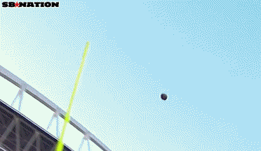

Husky Band FAQs
- How can I audition HMB?
- Do I need to be a music major to audition for HMB?
- No, we accept students from all majors.
- Can I be a part of HMB even if I don't attend UW?
- Yes! You can join HMB as long as you.re enrolled in a college or university in the state of Washington.
- My high school band doesn't march. Will that be a problem?
- No, we have a week of pre-school drills where you'll learn our style of marching, the music and choreography we perform, and everything else you need to know.
- How often does the band rehearse?
- We have four two-hour rehearsals every week in the evenings in addition to rehearsals four hours before kickoff on game days.
- Where does the band travel?
- There are plenty of traveling opportunities in HMB. We travel to WSU every other year, and send a pep band to most football away games. If the football team is selected for a bowl game, the band travels with. Additionally, we send a pep band to the PAC-12 basketball tournaments, this year in Key Arena and Las Vegas.
- Is there any major cost associated with joining the band?
- There is a fee for non-matriculated students. See the Membership Requirements (http://www.huskymarchingband.org/prospective-members/membership-requirements/) section of the HMB website for more details. Members are required to purchase a baseball cap, gloves, and spats which are yours to keep. All other parts of the uniform (including a polo shirt, DriFit to wear under the uniform, marching shoes, and the uniform jacket, pants, and shako) are provided for you at no cost. On official trips, all transportation, food, and housing expenses are paid for.
- How many shows do you perform each year?
- We are one of the few universities that continues to perform a new halftime show at every home game, which works out to be about seven each year.
- So I heard your director almost got a football scholarship at UW. Is that true?
- Since Dr. McDavid's famous catch (see below), we've been in contract negotiations with the athletic department

- Do you dress up for Halloween ever?
- Yes! Members love showing their creativity during our annual Halloween rehearsal.